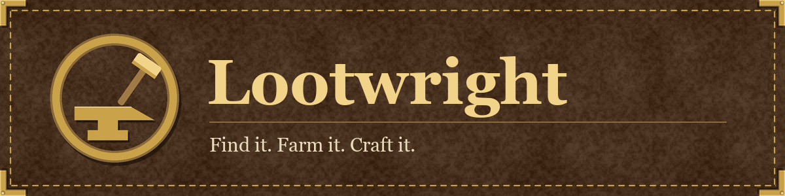
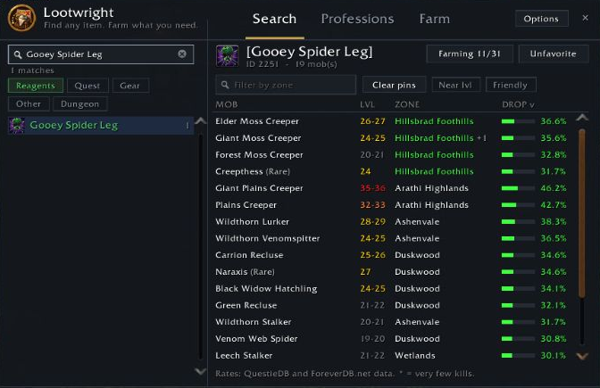
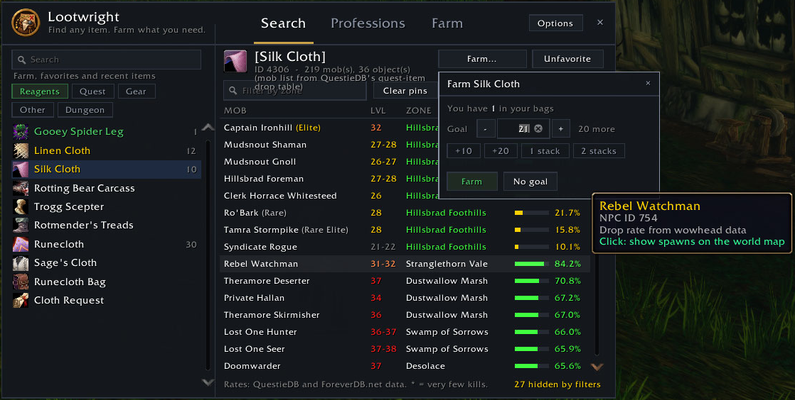
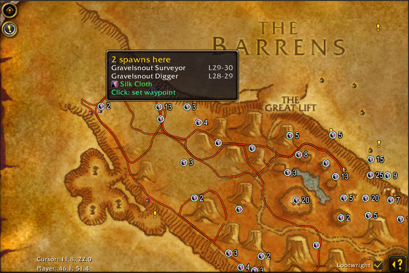
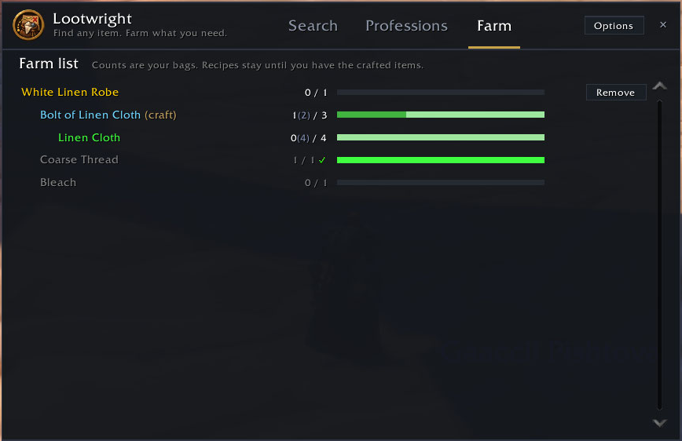
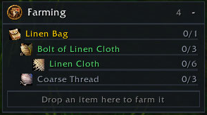
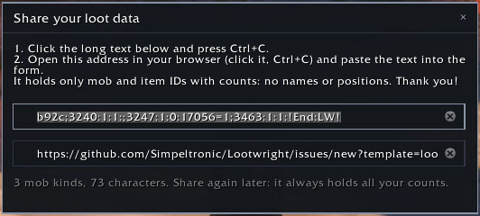
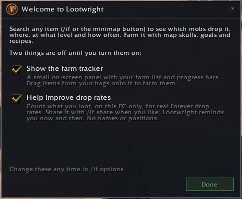

Lootwright
Find any item. Farm what you need. Type an item's name and Lootwright shows every mob that drops it, where they are, what level they are and how often it drops. Put it on your farm list with a goal, and the mobs you need get marked on your map and tooltips until your bags hold enough.
Made for WoW Forever, with crafting materials front and centre.
Features
Find where anything drops
Search by name, or shift-click any item. See every mob that drops it with level (coloured by difficulty), rank, zone and drop rate, best rates first and your current zone on top. Filter by Reagents, Quest items, Gear, Other or Dungeon boss drops. Reagents show how many recipes use them.

The Search tab (in-game)
Farm with goals
Press Farm… on an item and choose how many you want, like splitting a stack: type a number, use the mouse wheel, or pick +10, +20 or a stack. Mobs that drop it get a "Farm:" line on their tooltip and a skull on the world map. When your bags hold enough, it leaves the list by itself.

Choosing how many to farm (in-game)

Farm skulls on the world map, grouped with spawn counts (in-game)
Farm a whole recipe
On the Professions tab, pick a recipe and press Farm recipe. Every material becomes a goal. Crafted materials open up into what they're made from (Bolt of Linen Cloth into Linen Cloth), vendor-only materials are greyed out, and you get a message as each material is ready, and when you can craft.

A recipe on the Farm tab (in-game)
Map skulls and a waypoint arrow
Click a mob to mark all its spawns. Mobs you're farming get small grouped skulls with a count. Click any skull for an arrow and the distance to it.
Farm tracker
A small panel that keeps your farm list on screen, bank counts included. Drag an item from your bags onto it to start farming it. Turn it on in the welcome window, with /if mini or in the options.

The farm tracker (in-game)
Help work out real Forever drop rates (opt-in)
Most normal-mob rates today are rough Classic numbers. If you opt in, Lootwright counts what you loot, on your PC only, and once you've looted a mob 20 times its tooltip shows your own rate, and mobs that never drop the item go grey. Share your counts with /if share and they'll go into measured Forever rates for everyone. No names or positions are ever included.

Sharing your loot data (in-game)

The welcome window on first start (in-game)
Also
- Every recipe for every profession, including ones you haven't learned, with how to learn them.
- Honest numbers: dungeon boss rates measured in Forever with their kill counts. Rates from very few kills are marked, and items with no known rate say so.
- Favourites and recent items at your fingertips.
- Minimap button that works with minimap button collectors.
Quick start
Type /if (or /lootwright), or click the minimap button. /if options opens the settings, /if mini toggles the farm tracker, /if help lists every command.
Requirements
- QuestieDB (required): Lootwright reads item, mob and map data from it. You don't need Questie itself.
Parts you can switch off
Untick what you don't need in the AddOns list:
- Lootwright: search, farm list, map, tooltips.
- Lootwright - Data: every recipe and dungeon boss loot. Loads only when needed.
- Lootwright - Professions: the Professions tab.
Single features (tooltip lines, map skulls, the arrow, messages, the minimap button, the tracker) can be switched in /if options.
Good to know
- This is an early version (0.x). Things may change between versions.
- Most drop rates for normal mobs are rough Classic 1.12 numbers from CMaNGOS, marked with ~, not measured in Forever. Drops under 1% and some items still show "rate unknown" rather than a guess.
- Open each of your profession windows once so Lootwright knows which recipes you have.
Problems and ideas
Report bugs and ideas on GitHub Issues, or email lootwright-dev@proton.me if you don't use GitHub (that works for /if share loot data too). If something breaks, type /console scriptErrors 1, do it again, and include the error text.
Credits
- Data from ForeverDB.net (https://foreverdb.net): recipes and dungeon boss loot with drop rates measured in WoW Forever.
- QuestieDB (https://github.com/Questie/QuestieDB): item, mob, spawn and map data.
- Mob drop rates from CMaNGOS classic-db (github.com/cmangos/classic-db, GPL-3.0): Classic 1.12 rates for normal mobs, shown when no better rate is known.
Lootwright is free software under the GPL-3.0 licence.
If Lootwright saves you some farming time, you can support it on Ko-fi.